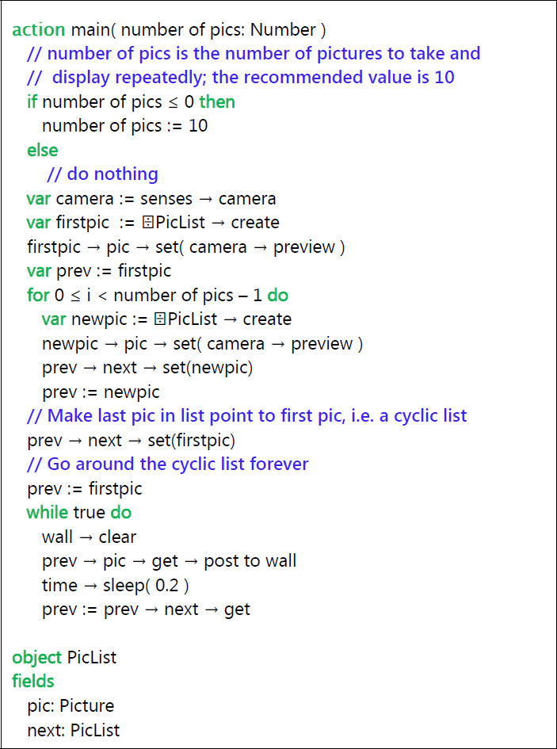
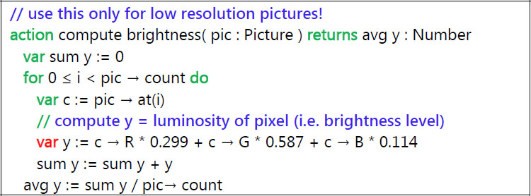
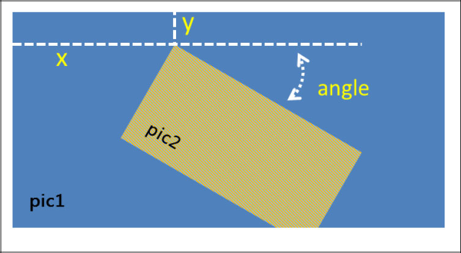
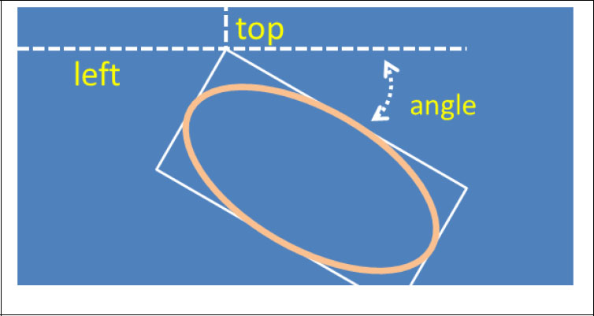

A smartphones, tablets and laptops are commonly used for displaying photographs and videos. TouchDevelop scripts provide new ways to download, create, modify and display photographs. Scripts can be used to record videos using the device’s camera and to play back both those videos and videos obtained from elsewhere.
6.1 Camera
Smartphones, tablets and most laptops have at least one camera capable of taking high-quality pictures or videos. This is the primary camera. On a phone or tablet, it would normally be located on the opposite side from the screen. Many of these devices have a second camera located above the screen which captures the user’s image and is intended for use in video calls, such as a Skype call. A camera above the screen is normally the only one provided on a laptop, and would be considered to be the primary camera by TouchDevelop.
The TouchDevelop API provides access to the camera (or cameras) via its senses service. The senses methods relevant to using the cameras are listed in Table 6-1. Two of these methods return instances of type Camera. This datatype provides methods for retrieving information about the camera and for taking a quick low-quality picture on a smartphone.
Table 6-1
Methods for using the camera(s)
Method | Description |
|---|---|
senses → camera: Camera | Returns the primary camera, if there is one; otherwise the result is invalid. |
senses → front camera: Camera | Returns the secondary camera, if there is one; otherwise the result is invalid.
|
senses → take camera picture: Picture | Uses the primary camera to take a picture. |
wall → set background camera( camera: Camera): Nothing | Causes images from the selected camera to be used as the background for the wall |
There are two ways to take a picture with the primary camera. The two approaches behave differently on a phone, but will normally behave identically on a laptop or tablet. The two forms are
senses → take camera picture
and
senses → front camera → preview
On a Windows phone, the first form takes a high-resolution picture using the phone’s built-in software. This causes a preview image to appear on the screen along with controls for adjusting the zoom level, exposure and flash etc. Control is not returned to the TouchDevelop script until the button to take the picture has been pressed and the picture taken. The second form just returns the preview image without any delay. On other devices, the two forms will both take pictures almost immediately and with the same resolution. The user may be prompted to allow or deny the script access to the camera.
All methods (except for invalid and post to wall) are listed in Table 6-2.
The user has the option of cancelling the picture capture in the high-quality version on a phone. Therefore the normal pattern of usage in a script might be code like the following. (An audible warning, such as beeps, to indicate when the picture is about to be snapped would be a useful addition to the script.)
“You have three seconds!” → post to wall
// give 3 seconds for user to get ready
time → sleep(3)
var
pic := senses → take camera picture
if not
pic → is invalid
then
// use the picture pic
…
else
// user cancelled the picture
To determine whether the device has a secondary camera, a script should invoke the senses → front camera method. (The name of this method is perhaps inappropriate for a laptop or PC.) If the result is the invalid value, then this camera is absent.
Table 6-2
Methods of the Camera datatype
Method | Description |
|---|---|
height : Number | Returns the height of the camera image in pixels. |
is front : Boolean | Returns true if this is the secondary camera, false if this is the primary camera. |
preview : Picture | Takes a low quality picture with the camera, returning the picture immediately. |
width : Number | Returns the width of the camera image in pixels. |
6.1.1 A sample program
The script the poor man’s camcorder (/ptxfa) asks you to sweep the camera slowly around while it takes 10 pictures in succession using the preview method of the Camera type. It then plays back the 10 pictures, giving the effect of a camcorder whose recordings are 2 seconds long.
A simplified and reprogrammed version of this script is presented in Figure 6-1.
This sample program also illustrates the use of an object declaration in the Records section of a script. It is used to create a data structure known as a cyclic list. It is a linked-list where every element of the list contains a reference to the next element, except that the last element references the first element, creating a cycle.

Figure 6-1
A simplified camcorder script (/xbhl)
6.2 Working with pictures
6.2.1 Picture albums and picture collections (Windows Phone and Android)
A smartphone normally holds various picture albums. On a Windows phone, they have names such as Camera Roll and Saved Favorites.
TouchDevelop provides access to these albums on the Windows Phone and will soon provide access to picture albums on Android devices. Unfortunately, security restrictions prevent access on the PC, Mac, Linux, iPad, iPhone and iPod Touch platforms.
On the platforms where it is supported, the API call
phone → picture albums
retrieves all the albums currently maintained on the phone, while the two method calls
phone → pictures
phone → saved pictures
return collections of all pictures, and the pictures held in the album named ‘saved pictures’, respectively. The methods for working with the Picture Album, Picture Albums and Pictures (a Picture collection) datatypes are listed in Table 6-3.
Once a Picture value has been obtained, perhaps by retrieving it from a collection, or by using the camera, there are many methods for manipulating the picture before it is displayed on the screen. These are covered in later sections of this chapter.
Table 6-3
Methods of Picture Album and Pictures datatypes (WP8 and Android)
Methods of Picture Album Datatype | Description |
|---|---|
albums : Picture Albums
| Returns a collection of all the nested albums held inside this album. |
name : String
| Obtains the name of the album. |
pictures : Pictures
| Returns a collection of all the pictures held in the album. |
Methods of Pictures Datatype
|
Description
|
find(name : String) : Number
| Returns the index of a picture in the collection which has the given name; the result is -1 if the picture cannot be found. |
random : Picture
| Returns a random picture. |
thumbnail(index : Number) : Picture
| Returns a thumbnail of the picture at the given index position in the collection. |
6.2.2 Access to pictures on other devices
In the Web App version of TouchDevelop, a single picture can be selected from the device’s hard drive using the method media → choose picture. A picture can also be downloaded from the web via the call
Var pic := web → choose picture
or added to a script as an Art resource.
6.2.3 Manipulating a picture
Display of an image uses the post to wall method, as in this example.
var
pic1 := media → choose picture
pic1 → post to wall
An alternative way to display a picture is to set the wall’s background image, as follows.
var
pic1 := media → choose picture
wall → set background picture(pic1)
The general-purpose methods of the Picture type are listed in Table 6-4.
Table 6-4
General Picture methods
Methods of Picture Datatype | Description |
|---|---|
at(index: Number): Color | Returns the color of the pixel at the given index in the picture |
clone : Picture | Returns a copy of the Picture |
count : Number | Returns number of pixels |
crop(left : Number, top : Number, width : Number, height : Number) | Crops the picture to a rectangular portion of the original. |
date : DateTime | Returns a date associated with the picture (if there is one) |
flip horizontal | flips the picture left to right |
flip vertical | flips the picture top to bottom |
height : Number | Returns height of picture in pixels |
is panorama : Boolean | Returns true if width > height |
location : Location | Returns a location associated with the picture (if there is one) |
pixel(left : Number, top : Number) : Color | Gets the pixel color at the specified x,y position |
post to wall | Displays the picture |
resize(width : Number, height : Number) | Scales the picture to have a new width and height |
save to library : String | Stores the picture in the Saved Pictures album and returns the filename |
set pixel(left : Number, top : Number, color : Color) | Sets the pixel color at the specified x,y position |
update on wall | If this picture has been displayed and then changed, this method replaces the displayed image with the new one |
width : Number | Returns width of picture in pixels |
The table omits methods which change the colors or the brightness, or methods which overlay shapes etc. on top of the picture. All such methods are covered in the following subsections of this chapter.
Care in Using the at, pixel and set pixel methods
Table 6-4 includes the at, pixel and set pixel methods. Before any of these methods is used in a script, some thought should be given to how large the picture is.
Any TouchDevelop script which accesses every pixel of a picture can be exceedingly slow to run, as well as draining the battery of a portable device. The implication is that the Picture type’s at, pixel and set pixel methods should be used only on pictures containing a modest number of pixels. Pictures taken by the camera contain as many pixels as the camera’s resolution. For example, it is not uncommon for phone cameras to have 6 megapixel resolution or higher. Pictures downloaded from the internet or transferred from your computer may contain even more pixels.
Although a picture shown on the screen is scaled to fit within the screen’s size, the picture retains its original number of pixels in the device’s memory. Unless the picture is intended to be copied to another device, it would usually be appropriate to reduce the picture’s resolution to match the screen resolution. Note that any method which processes all the pixels in a single call, such as resize, is reasonably fast.
The at method is useful for determining various aggregate properties of a picture, such as its average brightness. In more sophisticated scripts, the pixel method could for example be used for analyzing a picture and extracting details such as edges or, when set pixel is used too, for sharpening edges.
An example script which computes a picture’s average brightness is shown in Figure 6-2. Each pixel in the picture has a color value composed from red (R), green (G) and blue (B) components whose values range from zero intensity or 0.0 up to the maximum intensity which is 1.0. From the R,G,B values of a pixel, its luminosity can be calculated. (See, for example, the explanation of the YUV color space and the conversion formula for computing YUV values in Wikipedia.) The luminosity is a measure of the brightness of that pixel.

Figure 6-2
Computing brightness
The at and pixel methods are similar because they both retrieve the color of a particular pixel. Generally speaking, the at method should be used when it does not matter where the pixel is located within the picture, as is the case for the brightness calculation in Figure 6-2. It provides more efficient access because only one for loop to access all the pixels is needed. The pixel and set pixel methods would normally be placed inside two nested for loops, one to run through the rows and the other through the columns. The equivalence between the two ways to access a particular pixel is as follows.
pic1 → pixel(x,y) ≡ pic1 → at( y*pic1 → width + x )
Note that y coordinate values are measured from the top edge of the picture down. It is the opposite convention to that used in geometry.
Picture colorizing effects
The colors, the contrast and the brightness of a picture can all be modified using more methods of the Picture type which are listed in Table 6-5.
The brightness method can be used to increase or decrease the luminosities of all the pixels in the image in unison, so that the picture appears brighter or darker. The contrast method can be used to increase or decrease the range of luminosities, so that there is greater or smaller contrast between light and dark regions.
The colorize method is intended for creating a two color image from a greyscale image. All pixels darker than a specified threshold value (a number in the range 0.0 to 1.0) are replaced by the background color, while all those brighter are replaced by the foreground color. The method can also be applied to color images, but that image is converted to grayscale before the colorization is applied.
Table 6-5
Colorizing/intensity picture effects
Methods of Picture | Description |
|---|---|
brightness(factor : Number) : Nothing
| Increases of decreases the brightness of the picture. The parameter ranges from -1 to +1. |
colorize(background : Color, foreground : Color, threshold : Number) : Nothing
| Changes the picture to a two color scheme. Pixels darker than threshold become the background color, those brighter become the foreground color. |
contrast(factor : Number) : Nothing
| Increases or decreases contrast level of the picture. The parameter ranges from -1 to +1. |
desaturate : Nothing
| Converts the picture to grayscale. |
invert : Nothing
| Inverts the intensity of each of the R, G, B color components |
tint(color : Color) : Nothing
| Converts the picture to grayscale, and then tints with the supplied color |
The final picture will no longer have any variations in intensity. All pixels of the foreground color have the same intensity, as do all those with the background color.
The invert method produces a result similar to a color negative, as would be observed with a 35mm camera using chemically developed color film. (This is a type of camera which is becoming rare.)
Picture overlaying
The next section in this chapter, section 6.3, is all about drawing text, lines and various shapes on top of a picture. What about superimposing another picture on top of a picture? That facility is provided by the blend method. It is called blend as opposed to ‘superimpose’ say, because one of the method’s parameters chooses the opacity of the overlaid image. By choosing a low degree of opacity, the image at the bottom can be seen through the image on the top – achieving a blending of the two images.
The following few lines of code illustrate the concept.
var
pic1 := media → choose picture
var
w := pic1 → width
var
h := pic1 → height
var
pic2 := media → choose picture
pic2 → resize( w*0.5, h*0.5 )
pic1 → blend( pic2, w*0.3, h*0.2, 30, 0.7 )
pic1 → post to wall
The relationship of the two pictures to each other is illustrated in Figure 6-3.

Figure 6-3
Blending two pictures
The top left corner of pic2 is located at the x,y coordinates given by the second and third arguments to blend. This picture is rotated clockwise by the number of degrees given by the fourth argument. The opacity of the picture has been set at 0.7, which means that in the overlaid region, each pixel is a blend of 70% from pic2 and 30% from pic1. Finally, the bottom right of pic2 has been clipped to fit within pic1.
6.3 Static graphics drawing and display
A picture can be a photograph, a drawing, or a combination of the two. The methods provided by the Picture datatype for drawing lines and shapes are listed in Table 6-6.
Table 6-6
Drawing methods of the Picture datatype
Methods of Picture | Description |
|---|---|
clear(color : Color) | Sets all pixels to the given color |
draw ellipse(left: Number, top: Number, width: Number, height : Number, angle : Number, c: Color, thickness: Number) | Draws an ellipse; its bounding rectangle has the given width and height and is located at the specified position; its orientation is rotated clockwise by the angle given; the line has the color and thickness specified. |
draw line(x1: Number, y1: Number, x2: Number, y2: Number, color: Color, thickness : Number) | Draws a line from x1,y1 to x2,y2; the line has the color and thickness specified. |
draw rect(left : Number, top : Number, width : Number, height : Number, angle : Number, c : Color, thickness : Number) | Draws a rectangle which has the width and height provided and is located at the specified position; its orientation is rotated clockwise by the angle given; the line has the color and thickness specified. |
draw text(left : Number, top : Number, text : String, font size : Number, angle : Number, color : Color) | Writes text at the position specified, at the given font size and in the specified color; the text is rotated clockwise by the angle given |
fill ellipse(left : Number, top : Number, width : Number, height : Number, angle : Number, color : Color) | Like draw ellipse except that it is a solid (filled) ellipse. |
fill rect(left : Number, top : Number, width : Number, height : Number, angle : Number, color : Color) | Like draw rect except that it is a solid (filled) rectangle. |
In addition to these, there is the set pixel method which has already been covered and also the create picture method of the media resource for creating a new empty picture as illustrated below. All pixels in the new picture are colored white.
// create picture 400 pixels wide, 200 pixels high
var
pic := media → create picture( 400, 200 )
Figure 6-4 shows how the parameters of the draw ellipse method control the placement and orientation of the ellipse within a picture. An ellipse fits within a bounding rectangle, as drawn, and it is the width and height of that rectangle which are specified as arguments of the method.

Figure 6-4
Using the draw ellipse method
The left and top parameters provide the x, y coordinates of the top left corner of that bounding rectangle. Note that y coordinate values are measured downwards from the top of the picture.
A circle is a special case of an ellipse. Most graphics drawing software would draw a circle of a given radius and with its center at a specified position. To use the draw ellipse method, some extra arithmetic is needed. An action which accepts radius and the position of the center would be programmed as follows.
// Draws a circle with radius r and center at x, y.
action
Draw Circle( pic: Picture, r: Number, x: Number, y: Number,
thickness: Number, color: Color )
pic → draw ellipse( x-r, y-r, r*2, r*2, 0, color, thickness )
Drawing rectangles and filled versions of ellipses and rectangles is handled similarly; further explanation should not be needed.
6.4 Playing videos from the internet
Video files tend to be very large. You should think before storing one on a device with limited memory, such as a phone. Videos held on the phone can be created by using the phone’s camera or by being copied from a PC when the phone is synchronized.
TouchDevelop does not provide access to video files held on a smartphone. Nor can a script download a video file to the phone. However a script can access and play videos which are streamed from the internet.
Given the URL of a video file which is in a format that the device can play, a TouchDevelop script can open and play that file. The supported video formats can depend on the particular model of device in use. However most video files with the filename suffix ‘.mp4’ should work. (An H.264 encoded MP4 file is the format which works on every Windows phone, for example.)
Given the URL, a direct way to play the video is as follows.
// url is a String variable holding the URL of the file
web → play media( url )
It displays the video using the entire window. The back button can be used to stop the video.
An alternative means of playing the video is to create a Link value. Some sample code is as follows.
// url is a String variable holding the URL of the file
var
lnk := web → link media( url )
…
if not
lnk → is invalid
then
lnk → post to wall
“Tap video link to play it” → post to wall
else
(“Could not access url “ || url) → post to wall
The second approach shown above allows a script to show a list of links on the screen, allowing the user to select which one to play.